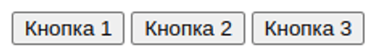
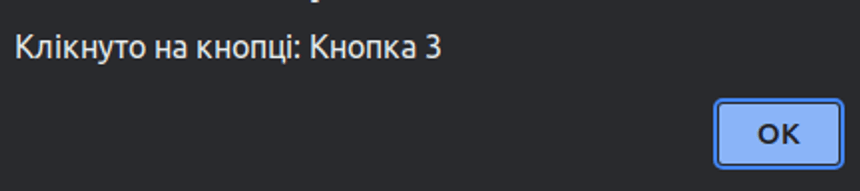

12.1. Go to the page
There are two buttons on the page. When clicking on the first button, the user has to enter a link in the prompt, and when clicking on the second button, the user is redirected to another site (using the previously entered link).
12.2. Using events
Create an HTML page with several buttons. Your task is to create an event handler for the
parent element that will track clicks on all buttons.
Step-by-step plan:
1. Create HTML elements: a parent container with several nested buttons.

2. Add an event handler to the parent container that will track clicks.
3. When a user clicks on any button, display a message about which button was clicked.

12.3. TODO list
Create an HTML page that contains a to-do list with the ability to add new tasks. Your goal is to use event delegation to create an event handler for the to-do list that will allow you to delete tasks when you click on them.
Step-by-step plan:
- Create HTML elements: a list of ul tasks, a text field for entering new tasks, and a button for adding new tasks.
- Add an event handler to the ul task list using delegation.
- When you click on any delete button, delete this item.
- Add the ability to enter new tasks in the text field and add them to the list using the button.
- Task 1
- Task 2
- Task 3